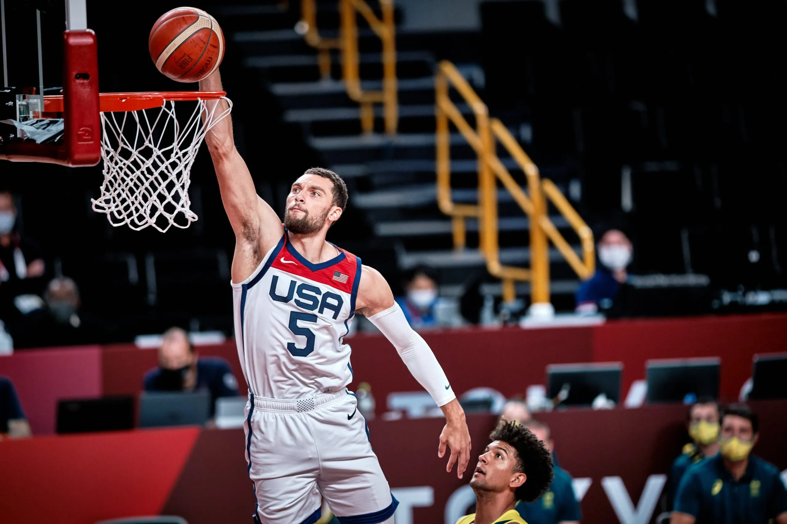
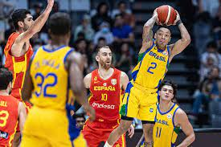
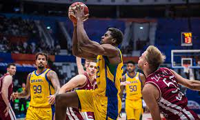

Basquete



Inventado em 1891 pelo professor canadense James Naismith, o basquete é um dos esportes mais praticados do mundo, com cerca de 450 milhões de jogadores, segundo a Federação Internacional de Basquete (FIBA). É especialmente popular nos Estados Unidos e em países como China, Espanha e Filipinas, sendo valorizado por sua dinâmica rápida e intensa.